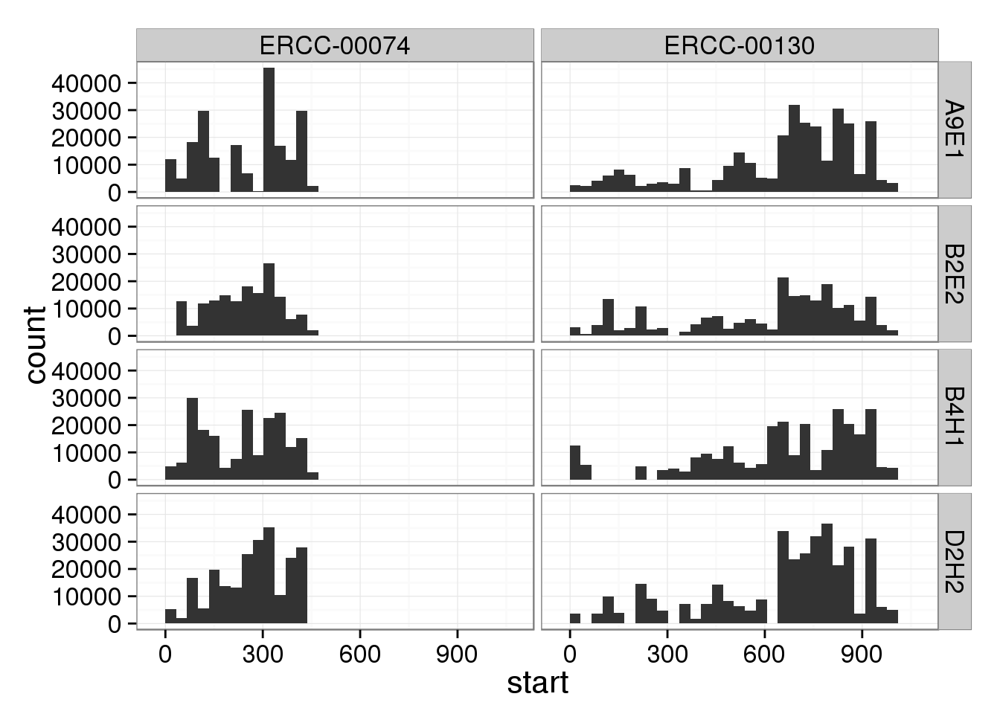
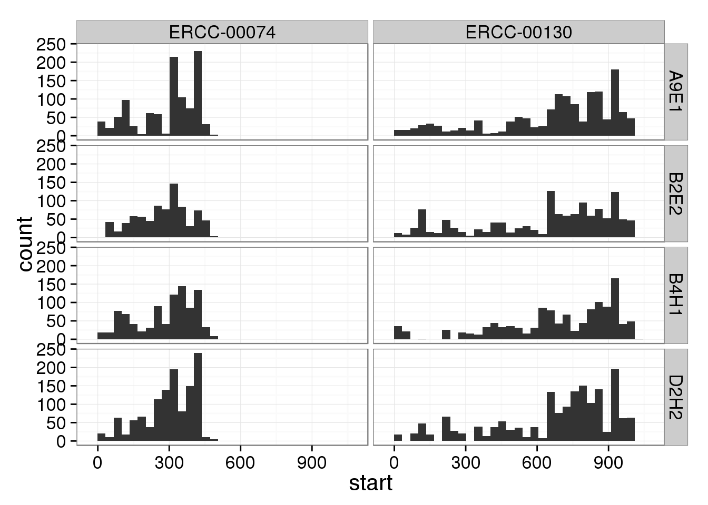

Last updated: 2015-07-21
Code version: c81003a9f8c7df2925a675f7e59f32b4a1c0833a
For the LCLs sequenced in an entire lane, some of the ERCC genes have greater than 1024 molecules. Investigating to see what is causing this.
library("ggplot2")
theme_set(theme_bw(base_size = 16))molecules <- read.table("../data/molecules-lcl.txt", header = TRUE,
stringsAsFactors = FALSE)
reads <- read.table("../data/reads-lcl.txt", header = TRUE,
stringsAsFactors = FALSE)
anno <- read.table("../data/annotation-lcl.txt", header = TRUE,
stringsAsFactors = FALSE)sum(molecules > 1024)[1] 150# Full lane samples
sum(molecules[, anno$full_lane] > 1024)[1] 81# Multiplexed samples
sum(molecules[, !anno$full_lane] > 1024)[1] 69# Full lane ERCC
sum(molecules[grep("ERCC", rownames(molecules)), anno$full_lane] > 1024)[1] 5# Multiplexed ERCC
sum(molecules[grep("ERCC", rownames(molecules)), !anno$full_lane] > 1024)[1] 0Select the ERCC genes which have greater than 1024 molecule counts in any of the four full lane samples.
ercc_over <- molecules[grepl("ERCC", rownames(molecules)) &
apply(molecules[, anno$full_lane], 1, function(x) any(x > 1024)),
anno$full_lane]
ercc_over NA19239.1.A9E1 NA19239.1.B2E2 NA19239.1.B4H1 NA19239.1.D2H2
ERCC-00074 1006 819 975 1263
ERCC-00130 1444 1314 1299 1733reads[rownames(ercc_over), anno$full_lane] NA19239.1.A9E1 NA19239.1.B2E2 NA19239.1.B4H1 NA19239.1.D2H2
ERCC-00074 208048 159085 199067 230380
ERCC-00130 310263 212316 269041 355580cd $ssd/lcl
for REGION in ERCC-00074 ERCC-00130
do
mkdir -p umi/$REGION
mkdir -p ~/log/umi/$REGION
for LCL in A9E1 B2E2 B4H1 D2H2
do
echo "extract-umi.py $REGION umi/$REGION bam-combined/19239.1.$LCL.trim.sickle.sorted.combined.bam" | \
qsub -l h_vmem=2g -cwd -V -j y -o ~/log/umi/$REGION -N umi-$LCL-$REGION
done
doneumi <- vector()
# colnames(umi) <- c("chr", "start", "umi", "lcl")
for (ercc in c("ERCC-00074", "ERCC-00130")) {
for (lcl in c("A9E1", "B2E2", "B4H1", "D2H2")) {
input <- read.table(paste0("/mnt/gluster/data/internal_supp/singleCellSeq/lcl/umi/",
ercc, "/19239.1.", lcl,
".trim.sickle.sorted.combined.umi.txt"),
header = TRUE, sep = "\t", stringsAsFactors = FALSE)
input$lcl <- lcl
umi <- rbind(umi, input)
}
}p <- ggplot(umi, aes(x = start)) +
geom_histogram() +
facet_grid(lcl~chr)
p
umi_unique <- umi[!duplicated(paste0(umi$chr, umi$start, umi$umi)), ]p %+% umi_unique
sessionInfo()R version 3.2.0 (2015-04-16)
Platform: x86_64-unknown-linux-gnu (64-bit)
locale:
[1] LC_CTYPE=en_US.UTF-8 LC_NUMERIC=C
[3] LC_TIME=en_US.UTF-8 LC_COLLATE=en_US.UTF-8
[5] LC_MONETARY=en_US.UTF-8 LC_MESSAGES=en_US.UTF-8
[7] LC_PAPER=en_US.UTF-8 LC_NAME=C
[9] LC_ADDRESS=C LC_TELEPHONE=C
[11] LC_MEASUREMENT=en_US.UTF-8 LC_IDENTIFICATION=C
attached base packages:
[1] stats graphics grDevices utils datasets methods base
other attached packages:
[1] ggplot2_1.0.1 knitr_1.10.5
loaded via a namespace (and not attached):
[1] Rcpp_0.11.6 digest_0.6.8 MASS_7.3-40 grid_3.2.0
[5] plyr_1.8.2 gtable_0.1.2 formatR_1.2 magrittr_1.5
[9] scales_0.2.4 evaluate_0.7 stringi_0.4-1 reshape2_1.4.1
[13] rmarkdown_0.6.1 labeling_0.3 proto_0.3-10 tools_3.2.0
[17] stringr_1.0.0 munsell_0.4.2 yaml_2.1.13 colorspace_1.2-6
[21] htmltools_0.2.6